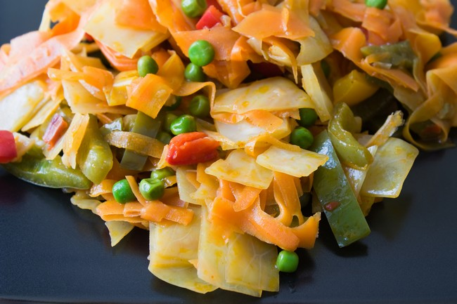

CHAKALAKA
Plat de crudités épicées Sud Africains, il est servi en accompagnement des plats de viande.
Les carottes râpées, le piment rouge et les oignons sont coupés en lamelles et toujours assaisonnés d’une petite
touche personnelle, ce qui rend ce plat unique
NDOLE
Plat préparé à base de la plante légumière dont les feuilles sont consommées vertes,
mais aussi dans une moindre mesure séchées.
AGOU 
Plat préparé à base de la plante légumière dont les feuilles sont consommées vertes,
mais aussi dans une moindre mesure séchées.
YASSA 
Plat sénégalais à base d'oignons frits et de riz et qui peut être accompagné de viande marinée
dans le citron puis frite ou braisée, de poulet ou de poisson.
RIZ JOLLOF
Plat populaire en Afrique de l’Ouest. Mais, il s’agit d’une appellation qui regroupe en fait plusieurs
catégories de plats avec en commun, le fait d’être préparés avec une seule marmite.
Yebessessi
sauce piquante à la tomate est une spécialité togolaise qui accompagne beaucoup de plats (par exemple,
le akumè, le kom, le akpan, le gali kumè, le ablo...)
CUISINE MAROCAINE 
une cuisine méditerranéenne
caractérisée par sa variété de plats issus principalement de la cuisine berbère, avec des influences
arabes et juives
Alloco
Plat traditionnel de Côte d'Ivoire,
très populaire en Afrique de l'Ouest et en Afrique centrale, à base de banane plantain.
Decouvrez nos delicieuses recettes dans un environnement aussi attrayant que reposant en famille ou entre amis.